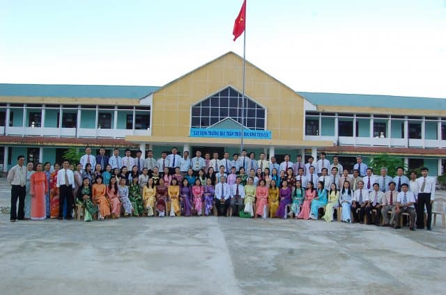
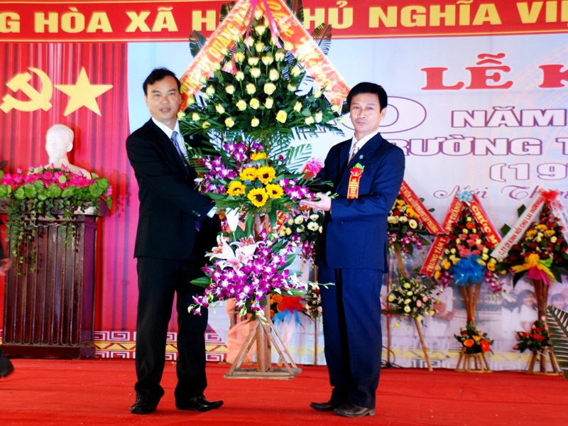

|
 |
TƯỢNG ĐÀI CHIẾN THẮNG NÚI THÀNHNằm trên một đồi cao 43 m ở xã Tam Nghĩa, huyện Núi Thành, tiếp giáp với tuyến đường sắt Bắc Nam và quốc lộ 1A, cách sân bay Chu Lai 4km về phía Tây, tượng đài chiến thắng Núi Thành là một trong những tượng đài có quy mô lớn nhất của tỉnh Quảng Nam, là minh chứng hùng hồn cho tinh thần yêu nước và ý chí, nghị lực phi thường của con người đất Quảng. |
ĐÁNH GIÁ TRƯỜNG THPT NÚI THÀNHCứ mỗi mùa tuyển sinh đến thì việc chọn ngôi trường uy tín để gửi gắm con em trong suốt 3 năm cấp 4 luôn là điều khiến các bậc phụ huynh đau đầu. Chất lượng giáo dục là yếu tố đặc biệt được quan tâm. Trên địa bàn huyện Núi Thành, phụ huynh có thể tham khảo trường THPT Núi Thành, đây là một ngôi trường có chất lượng tốt, được đánh giá cao. Cùng tìm hiểu qua bài đánh giá Trường THPT Núi Thành có tốt không ngay sau đây nhé ! |
|  | |
MỘT TRONG NHỮNG TRƯỜNG THPT HÀNG ĐẦU TẠI QUẢNG NAMNhững ngôi trường được mệnh danh "lò đào tạo nhân tài" của Quảng Nam đã luôn là mục tiêu cố gắng của nhiều thế hệ học trò trong suốt bao năm qua. Không chỉ sở hữu đội ngũ giáo viên xuất sắc mà về cơ sở vật chất cũng như các hoạt động dạy và học tại mỗi ngôi trường cũng đều giúp các em học sinh đạt được thành tích học tập tốt nhất. Và bài viết dưới đây của Alltop xin giới thiệu về các Trường THPT hàng đầu tại Quảng Nam. |
TRƯỜNG THPT NÚI THÀNH KỶ NIỆM 40 NĂM THÀNH LẬP NĂM 2023Sáng 26.3, Trường THPT Núi Thành tổ chức lễ kỷ niệm 40 năm thành lập trường (1976 - 2016). Tham dự buổi lễ có ông Đoàn Ngọc Thi - Phó Trưởng ban Tuyên giáo Tỉnh ủy; ông Hà Thanh Quốc - Giám đốc Sở GD-ĐT; lãnh đạo huyện Núi Thành và hàng trăm cựu học sinh của trường.Tiền thân Trường THPT Núi Thành là Trường Đệ nhất cấp Lý Tín bắt đầu họat động từ năm học 1964 - 1965. Sau ngày giải phóng, đến tháng 11.1976 trường được thành lập. |
VĂN PHÒNG TRỰC TIẾP TRƯỜNG |
|||
THỜI KHÓA BIỂU (TỪ NGÀY 31/1/2023) |
XEM THỜI KHÓA BIỂU CÁC LỚP TẠI ĐÂY: XEM TẠI ĐÂY
XEM THỜI KHÓA BIỂU GIÁO VIÊN: XEM TẠI ĐÂY
| Nữ Thủ khoa trường làng đa tài | Một số điểm mới trong kỳ thi tốt nghiệp |
ĐỌC THÊM:Nam sinh nhận hàng loạt học bổng từ 5 đại học danh tiếng hàng đầu nước Mỹ (14/04) ĐỀ THAM KHẢO THI THPT QUỐC GIA 2022 CỦA BỘ GD&ĐT (01/04) Lễ tuyên dương 10 gương mặt trẻ Việt Nam tiêu biểu năm 2021 (26/03) ĐHQG-HCM SẼ TỔ CHỨC THI ĐÁNH GIÁ NĂNG LỰC TẠI 17 TỈNH/THÀNH PHỐ (21/01) Ban hành Thông tư đánh giá học sinh trung học theo CT GDPT 2018 (21/08) |
|
TÀI NGUYÊN MỚI:
Biểu tượng File ĐỀ KIỂM TRA -HUONGWS DẪN CHẤM KTPL10(2022-2023) chinhthuc (16)
ĐỀ VÀ ĐÁP ÁN KIỂM TRA CUỐI KÌ I CD 12 NĂM 2022-2023 (21)
HƯỚNG DẪN CHẤM MÔN KTPL KIỂM TRA CUỐI KỲ I NĂM 2022-2023 (39)
ĐÁP ÁN KIỂM TRA CUỐI KỲ I MÔN LỊCH SỬ 12 (48)
MA TRẬN KIỂM TRA CUỐI KỲ I - MÔN LỊCH SỬ 10 - NH 2022-2023 (49)
MỘT SỐ CÂU HỎI TRẮC NGHIỆM ÔN TẬP KIỂM TRA CUỐI KỲ I (146)
MA TRẬN KIỂM TRA CUỐI KỲ I - MÔN LỊCH SỬ 11 - NH 2022-2023 (73)
ĐỀ, ĐÁP ÁN KTRA GIỮA HKI TIN 12- 2022-2023 (48)
ĐỀ, ĐÁP ÁN KTRA GIỮA HKI TIN 11- 2022-2023 (62)
ĐỀ, ĐÁP ÁN KTRA GIỮA HKI- TIN 10 - 2022-2023 (36)